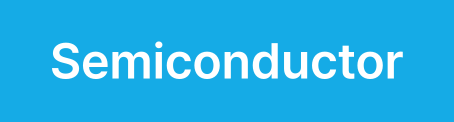

Overview
반도체 산업은 나노 단위의 정밀성과 글로벌 공급망 복잡성이라는 이중 과제를 안고 있습니다. 웅진은 SAP S/4HANA·SAP Business One·MES·EWM 연계 경험을 기반으로 생산·품질·자산·공급망을 표준화·자동화하여 수율 개선과 글로벌 운영 효율성을 동시에 강화합니다.
통합된 공정 관리로 생산성 향상
반도체 제조는 다수의 복잡한 공정이 유기적으로 연결되어 진행됩니다. 이 과정에서 효율적인 통합 관리가 이루어지지 않으면 불량 발생이나 생산성 저하의 위험이 높아집니다. 웅진이 제안하는 솔루션은 각 공정 간의 연계를 강화하고, 실시간 데이터 공유를 통해 생산성 향상과 공정 최적화를 지원합니다. 이를 통해 생산 라인의 유연성을 높이고, 신속한 문제 해결을 가능하게 합니다.
정밀한 품질 관리 시스템
반도체는 극도로 정밀한 제품이므로, 미세한 공정 오류도 심각한 품질 문제로 이어질 수 있습니다. 공정의 각 단계에서 품질을 모니터링하고, 정밀한 검사 데이터를 기반으로 문제를 사전에 식별하여 대응하는 것이 요구됩니다. 자동화된 검사 과정과 실시간 데이터 분석을 통해 불량률을 최소화하고, 제품의 품질을 보장합니다.
글로벌 공급망과의 연계 강화
반도체 산업은 글로벌 공급망에 크게 의존하며, 원자재부터 최종 제품까지 다양한 이해관계자가 참여합니다. 웅진은 지난 경험을 바탕으로 고객사에 최적화된 솔루션을 제안합니다. 이를 통해 고객은 글로벌 파트너와의 원활한 연계를 지원하며, 데이터 기반의 의사결정을 통해 공급망 전반의 효율성을 극대화합니다. 공급망의 안정성을 확보하고, 원자재 공급의 차질로 인한 생산 지연을 방지할 수 있습니다.


Features
실시간 공정 모니터링 및 제어
반도체 제조에서 실시간으로 공정을 모니터링하고 제어하는 것은 필수적입니다. 웅진이 제안하는 솔루션은 공정 중 발생할 수 있는 모든 변수를 실시간으로 감지하고, 이를 자동으로 조정하여 공정의 연속성을 유지합니다. 이 솔루션을 통해 공정의 안정성을 높이고, 생산성을 극대화할 수 있습니다.
자동화된 품질 검사 및 불량 예측
자동화된 검사 장비와 AI 기반의 불량 예측 시스템을 활용하여 공정 중 발생할 수 있는 품질 문제를 조기에 발견하고 대응합니다. 이 시스템은 검사 데이터를 실시간으로 분석하고, 불량률을 줄이기 위해 필요한 조치를 자동으로 제안합니다. 이를 통해 생산 품질을 크게 향상시킬 수 있습니다.
클라우드 기반의 글로벌 공급망 관리
글로벌 반도체 공급망을 효과적으로 관리하기 위해 웅진은 클라우드 기반의 공급망 관리 솔루션을 제공합니다. 이 솔루션은 공급망 전반의 데이터를 통합하고, 전 세계의 파트너와 실시간으로 협력할 수 있도록 지원합니다. 이를 통해 공급망의 투명성을 높이고, 안정적인 원자재 조달과 비용 절감을 실현할 수 있습니다.